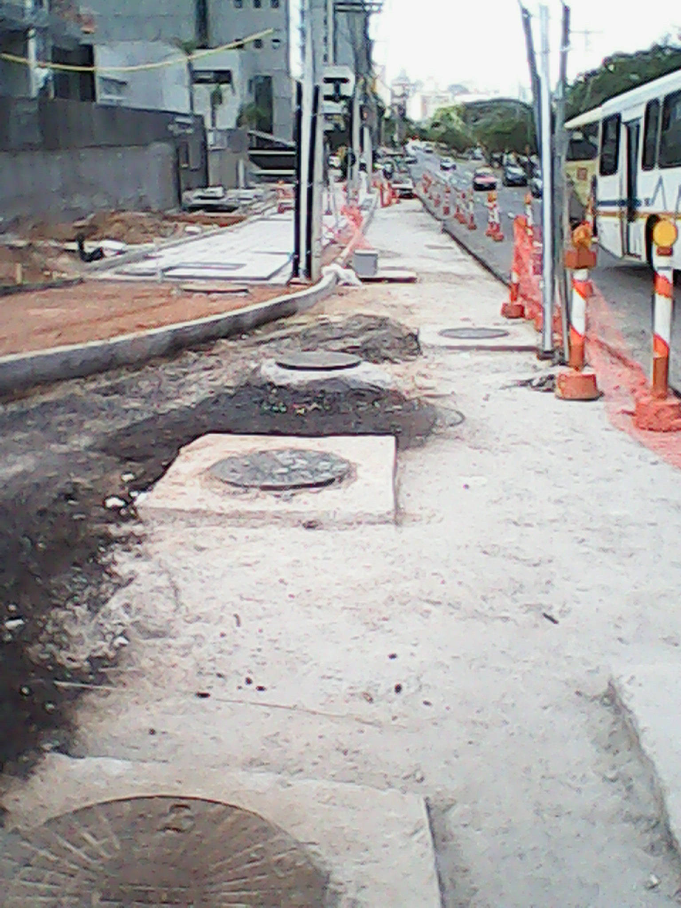
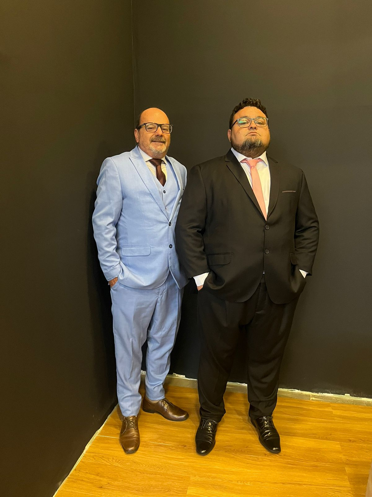
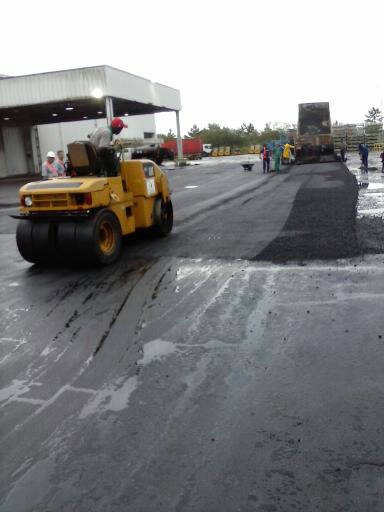
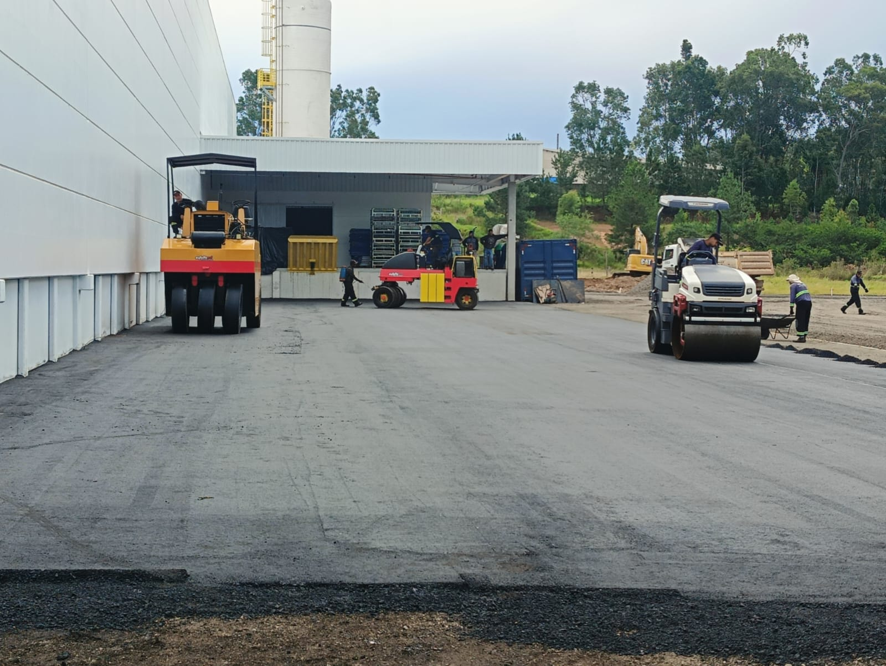
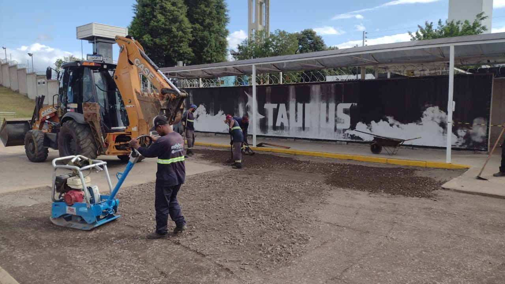
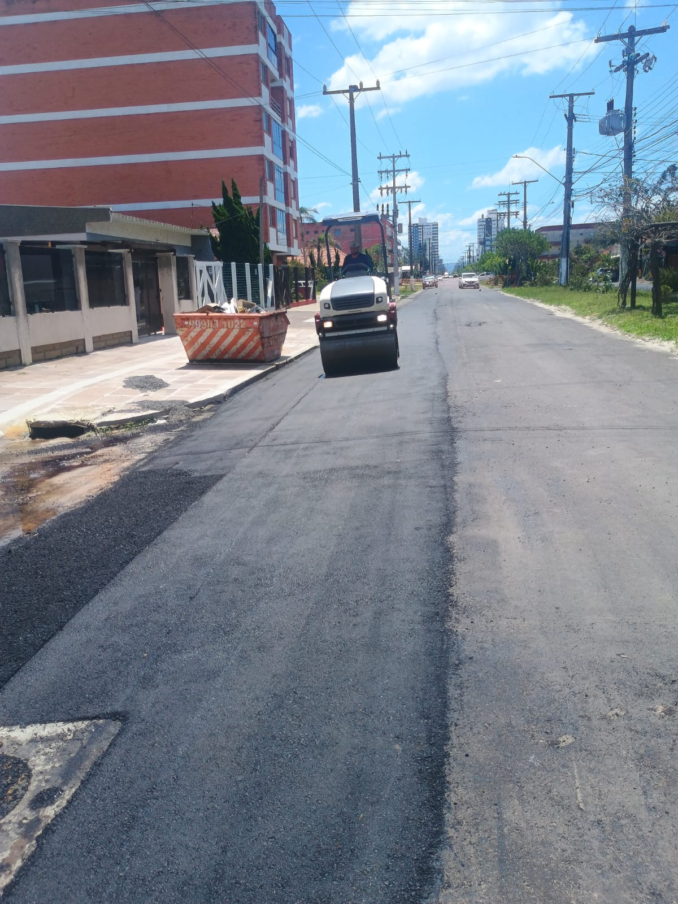

Pavimentação · 4 fotos
Maiojama Borges de Medeiros
Aplicação de CBUQ e acabamento final em área comercial de alto fluxo.
Terraplanagem, CBUQ, recapeamento, drenagem e sinalização — do projeto à entrega, com equipe própria e maquinário dedicado em todo o Rio Grande do Sul.
O que fazemos
Usinagem e aplicação de concreto betuminoso usinado a quente para vias, pátios e estacionamentos.
Corte, aterro, nivelamento e compactação do solo. A base certa para uma via durável.
Fresagem e nova camada asfáltica para devolver qualidade de rolamento a vias desgastadas.
Sarjetas, bocas-de-lobo e tubulações para proteger o pavimento da ação das chuvas.
Pintura de faixas, setas, zebrados e placas conforme normas do CONTRAN e DNIT.
Reparo localizado, selagem de trincas e contratos recorrentes de manutenção preventiva.
Sobre a Asfaltosul
Sediada na Rua Washington Luiz, 82 — Centro Histórico de Porto Alegre —, a Asfaltosul atua em todo o estado gaúcho com equipe própria e equipamentos especializados, do menor tapa-buraco ao maior pátio industrial.
Nossa missão: baixo custo de investimento, alta qualidade de execução e prazo cumprido. Mais de 50 grandes clientes já confiaram — Coca-Cola, GM, Gerdau, Zaffari, UFRGS e Havan estão na nossa lista.

Empresas que confiam na Asfaltosul
Obras realizadas

Pavimentação · 4 fotos
Aplicação de CBUQ e acabamento final em área comercial de alto fluxo.

Pátio Industrial · 4 fotos
Pavimentação de pátio para operação logística de alta movimentação.
Condomínio · Vídeo
Pavimentação de vias internas, estacionamentos e drenagem pluvial em condomínio residencial.

Pátio Industrial · 6 fotos
Pavimentação de estacionamento e pátio de manobra em grande área comercial.

Pátio Industrial · 1 foto
Terraplagem do patio da Taurus.

Pátio Industrial · 6 fotos
Pavimentação de estacionamento e pátio de manobra em grande área comercial — CBUQ com acabamento de qualidade premium.